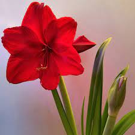
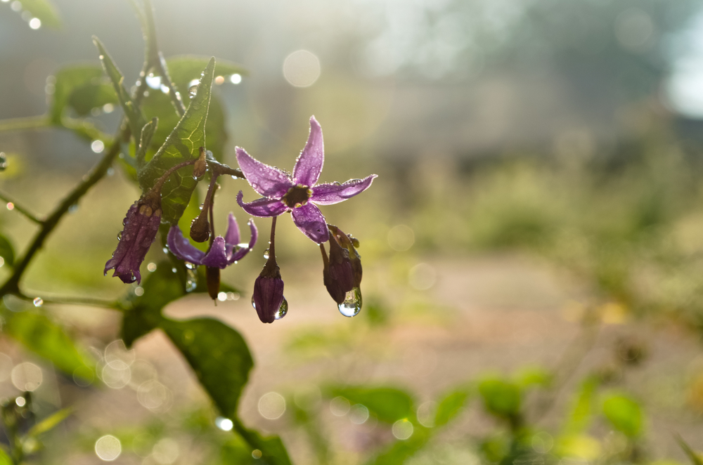
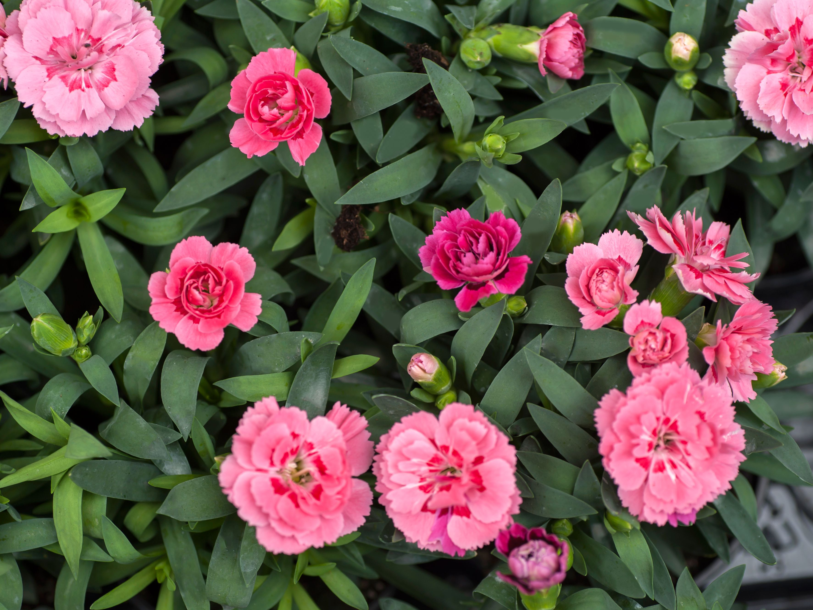

The lotus flower meaning varies from culture to culture. In general, however, the lotus commonly
serves as a sacred for purity, rebirth, and strength. Because lotuses rise from the mud without stains, they are often viewed as a symbol of purity.
| OTHER FLOWERS | |||
|---|---|---|---|
| AMARYLLIS | BELLADONNA | CALLA ILLY | PINK CARNATION |
|  |  |  | |
| PRIDE | SILENCE | BEAUTY | I'LL NEVER FORGET YOU |